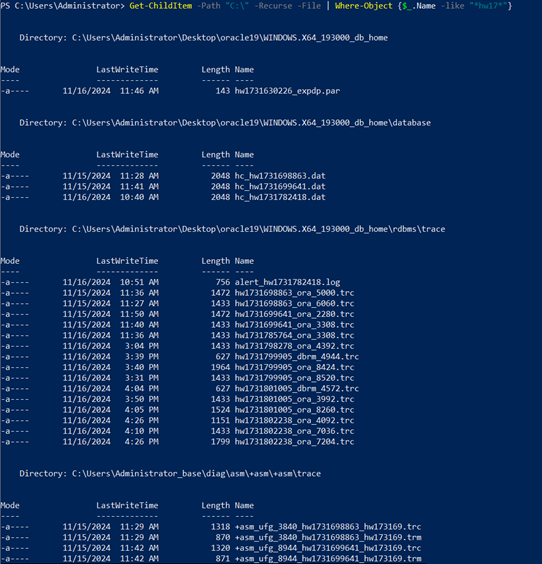

During table-level restoration, an auxiliary database instance is generated on the target host. When the restoration job is complete, the generated auxiliary database instance is deleted automatically. If the restoration job details contain information indicating that residual resources may exist in the restoration job, you need to manually delete the residual resources.
su - oracle
find $ORACLE_BASE/ -iname SID of the auxiliary database instance find $ORACLE_BASE/* -iname '*hw1726111726*' | grep -v admin | grep -v oradata
If the residual resource path is displayed in the command output, residual resources exist.
If the following information is displayed, residual resources of auxiliary database instance hw1726111726 exist.
[oracle@adg1 ~]$ find $ORACLE_BASE/ -iname hw1726111726 /u01/app/oracle_base/diag/rdbms/hw1726111726 /u01/app/oracle_base/diag/rdbms/hw1726111726/hw1726111726 /u01/app/oracle_base/admin/hw1726111726 [oracle@adg1 ~]$ [oracle@adg1 ~]$ find $ORACLE_BASE/* -iname '*hw1726111726*' | grep -v admin | grep -v oradata /u01/app/oracle_base/dbhome_1/dbs/inithw1726111726.ora /u01/app/oracle_base/dbhome_1/dbs/hc_hw1726111726.dat /u01/app/oracle_base/dbhome_1/dbs/lkHW1726111726 /u01/app/oracle_base/dbhome_1/rdbms/log/hw1726111726_ora_11840.trc /u01/app/oracle_base/dbhome_1/rdbms/audit/hw1726111726_ora_11768_20240912112848327066143795.aud /u01/app/oracle_base/dbhome_1/rdbms/audit/hw1726111726_ora_11840_20240912112849361156143795.aud /u01/app/oracle_base/dbhome_1/rdbms/audit/hw1726111726_ora_17518_20240912113510572998143795.aud /u01/app/oracle_base/dbhome_1/rdbms/audit/hw1726111726_ora_17604_20240912113510751735143795.aud /u01/app/oracle_base/dbhome_1/rdbms/audit/hw1726111726_ora_23101_20240912113527045619143795.aud /u01/app/oracle_base/dbhome_1/rdbms/audit/hw1726111726_ora_24116_20240912113531006770143795.aud ...... [oracle@adg1 ~]$
su - oracle
find $ORACLE_BASE/ -iname SID of the auxiliary database instance -exec rm -rf {} \;
find $ORACLE_BASE/* -iname '*hw1726111726*' | grep -v admin | grep -v oradata | xargs rm -rf
If the following information is displayed, the residual resources of the auxiliary database instance have been cleared. You can perform 1 to check whether the residual resources have been cleared.
[oracle@adg1 ~]$ find $ORACLE_BASE/ -iname hw1726111726 -exec rm -rf {} \;
find: '/u01/app/oracle_base/diag/rdbms/hw1726111726': No such file or directory
find: '/u01/app/oracle_base/admin/hw1726111726': No such file or directory
[oracle@adg1 ~]$ find $ORACLE_BASE/ -iname hw1726111726
[oracle@adg1 ~]$
[oracle@adg1 ~]$ find $ORACLE_BASE/* -iname '*hw1726111726*' | grep -v admin | grep -v oradata | xargs rm -rf
[oracle@adg1 ~]$
[oracle@adg1 ~]$ find $ORACLE_BASE/* -iname '*hw1726111726*' | grep -v admin | grep -v oradata
[oracle@adg1 ~]$
oradim -delete -sid SID of the auxiliary database instance
Get-ChildItem -Path ORACLE_BASE path -Recurse -File | Where-Object {$_.Name -like "*SID of the auxiliary database instance*"}
Get-ChildItem -Path ORACLE_HOME path -Recurse -File | Where-Object {$_.Name -like "*SID of the auxiliary database instance*"}
